EnterpriseSG workflow builder
Designing a no/low-code digital workflow builder
* Product name and assets replaced to protect internal product identity.
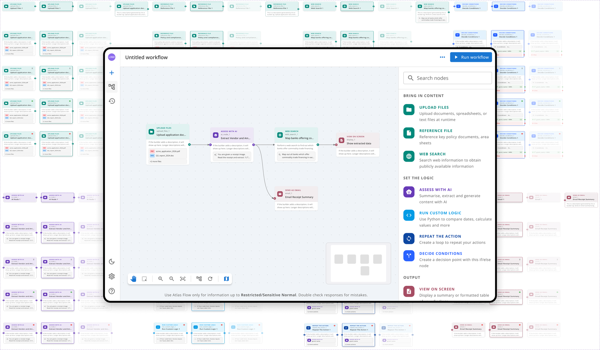
Overview
Processing officers at Enterprise Singapore have deep domain expertise but no technical background. They handle computation-heavy tasks such as grants and claims, working across information from many documents at a time, with no easy way to turn that expertise into repeatable, automated workflows.
The workflow builder is a visual canvas where officers can build, own and share workflows for complex document processing, without writing code.
From vibe-coded prototype to designed system
In this project, the engineers built a working prototype first. I then systemised it around what testing workshops showed, rather than formal UX research.
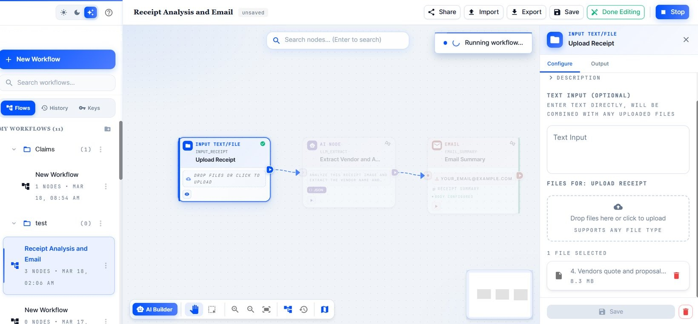
As the sole designer, I worked closely with the PM and front-end developer, building on the same MUI design system as the research assistant so the two products feel consistent for officers moving between them.
A canvas that shows run status at a glance
The canvas is a dot-grid workspace where officers build, with a floating action panel and a minimap for larger workflows.
Mid-run, officers couldn’t tell a workflow’s state without opening each node. So I designed the connectors to show it, keeping the answer on the canvas next to the nodes it refers to. Connectors move through five states: idle, dragging, node selected, workflow running and run complete.
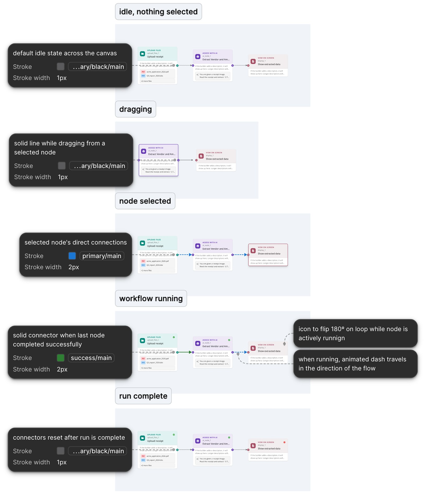
One node system across every category
The clearest sign that the vibe-coded product hadn’t been designed as a system was the nodes. For example, Input File was blue and Reference File was pink, with different card structures and field layouts despite doing similar jobs.
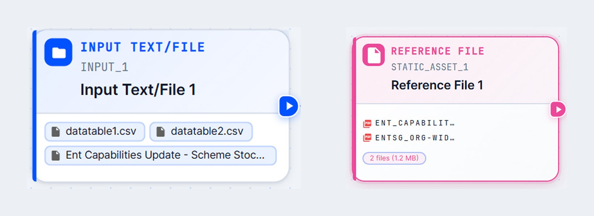
Across categories, nodes surfaced different information and actions on the card, with no shared logic for what belonged on the canvas vs. inside the config panel.
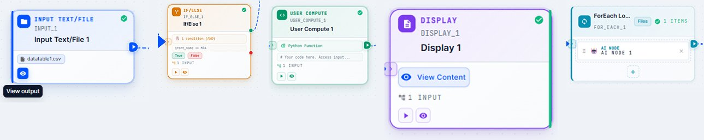
Officers had to learn each node individually instead of transferring what they already knew, which works against a no-code tool for people without technical backgrounds.
I brought nodes within each category onto one shared visual system: one colour family, one layout, and the same five states everywhere (default, ready, running, success, failed). An officer who understands the Upload Files node can read the Reference File node without relearning it.
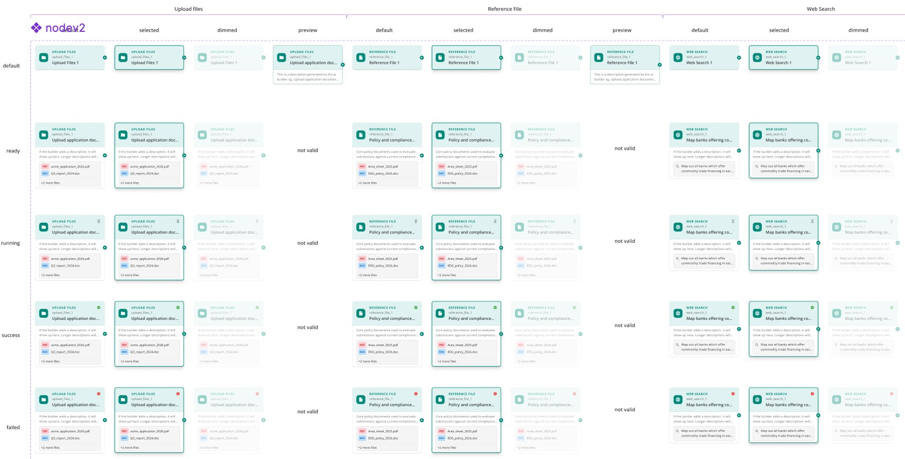
I designed every node, in every state, for both light and dark themes, so the system holds up whichever theme officers choose to work in.
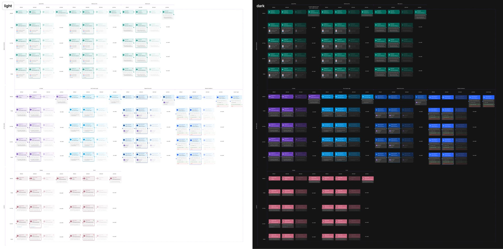
Config panels in plain language
The vibe-coded config panels had two problems.
Input File and Reference File configure near-identical things, but had different field order, labelling and structure.
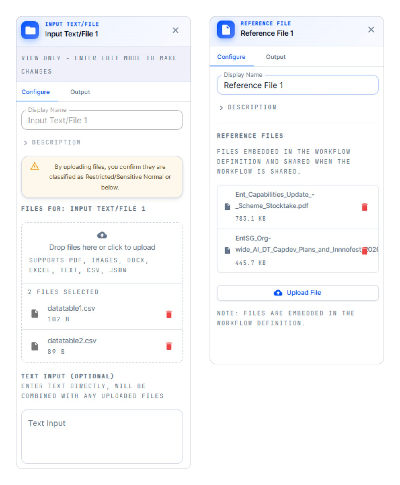
Raw code and engineering syntax (Python code blocks, JSON trees, model IDs, {node_id} interpolation) sat directly in the panel, with no translation layer for someone without an engineering background.
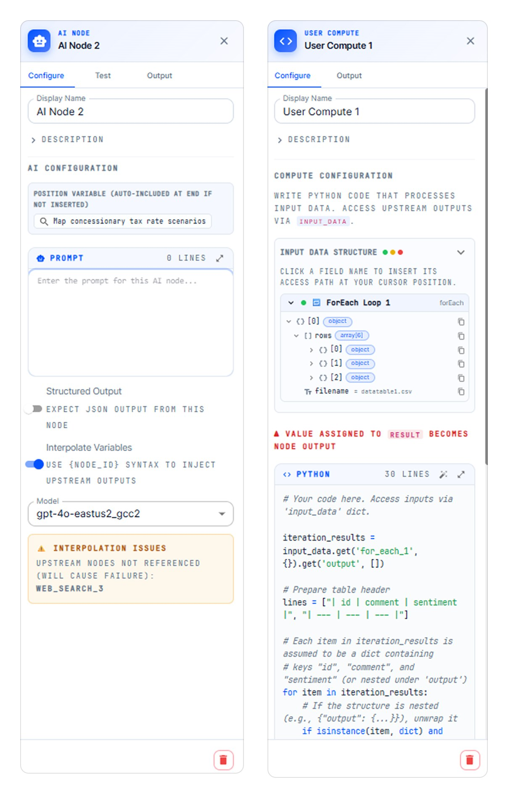
One pattern for every panel
I standardised the panel structure:
- The same header: icon, node type and name
- Title and description always first
- Then the node’s own fields
- Delete always at the bottom
Every panel also shares the same three states: default, with inputs, and view only.
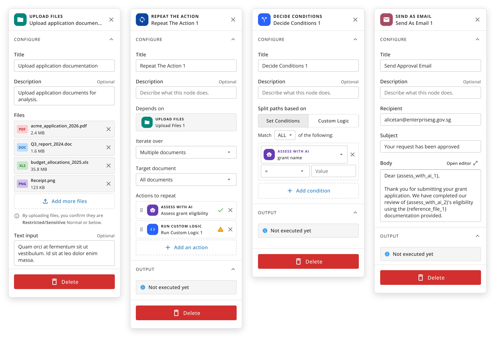
Choices in plain language
I replaced technical settings with plain-language choices officers can understand. For example, each model comes with a note on what to use it for, and prompts can start from task-based templates.
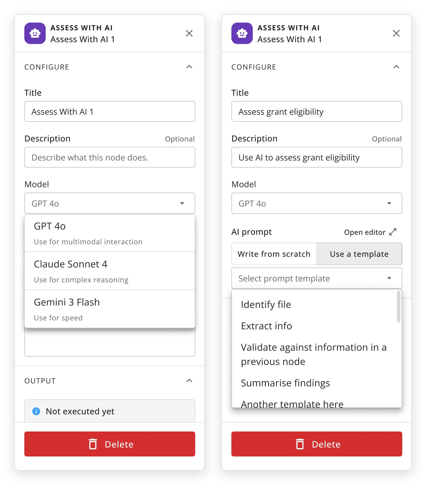
We also introduced Generate with AI, which turns a plain English description into a prompt or Python code.
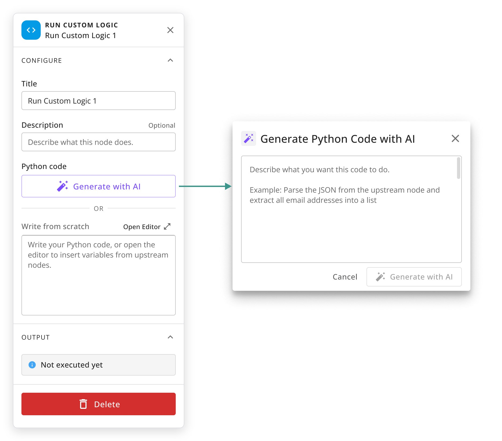
Outcomes
The canvas, node system and config panels, in light and dark themes, have been handed off to dev, and the builder is being tested by ~8 teams across the organisation.
Next up: a workflow library (including governance flows) and more data nodes.